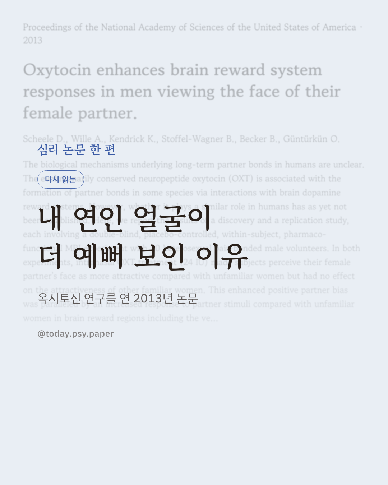
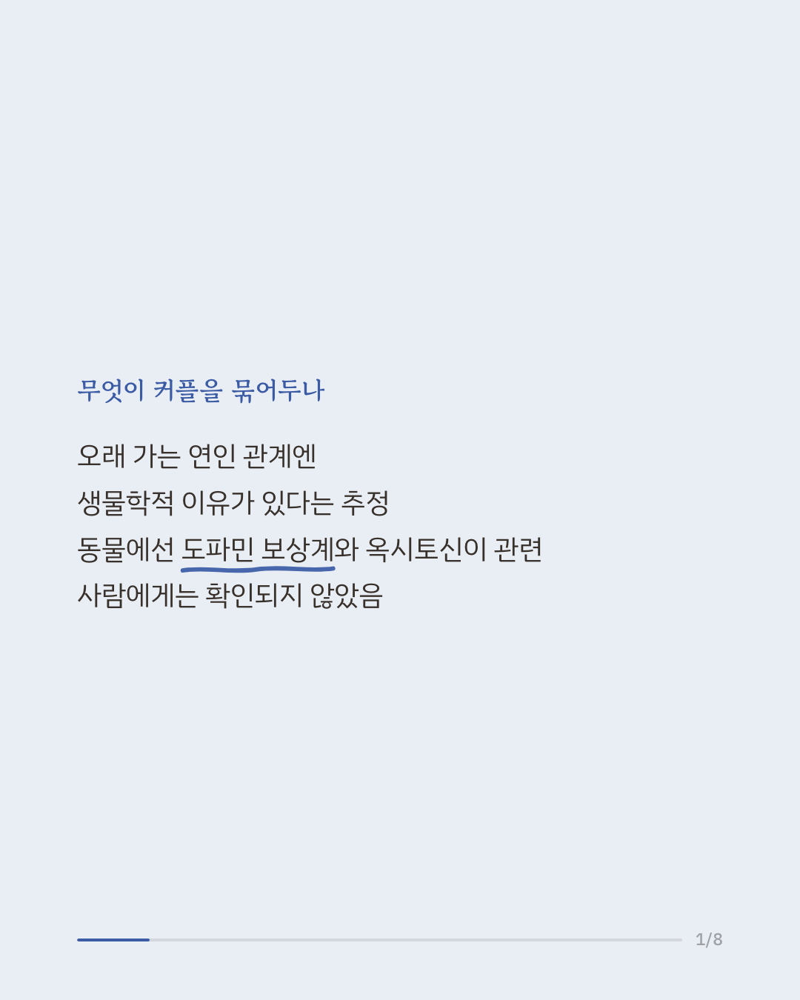
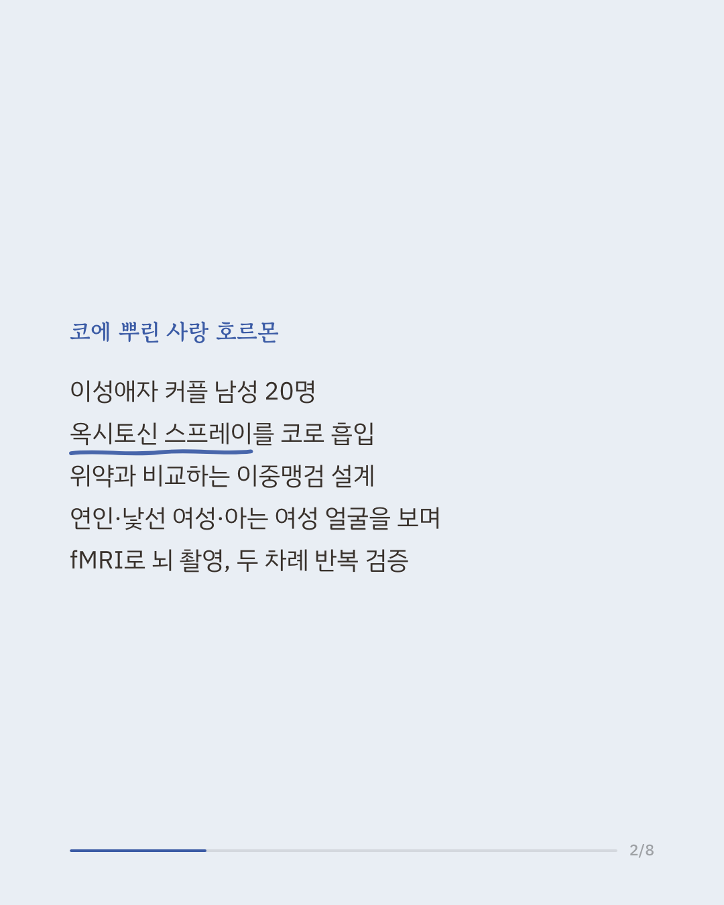
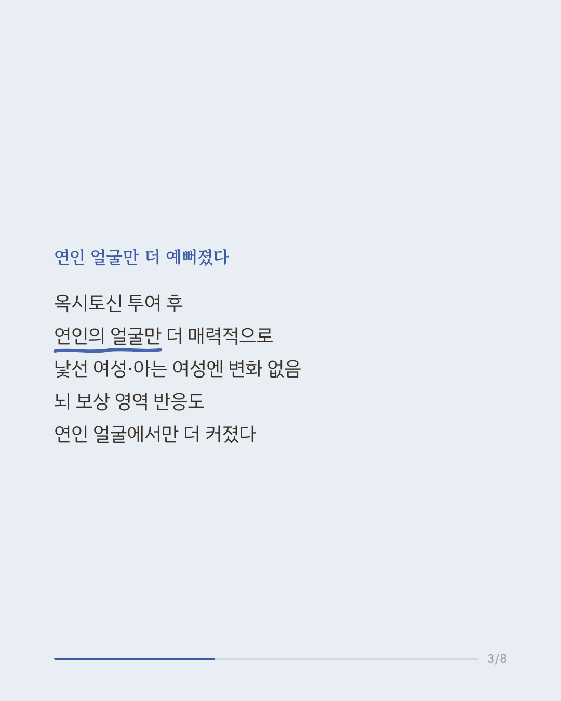
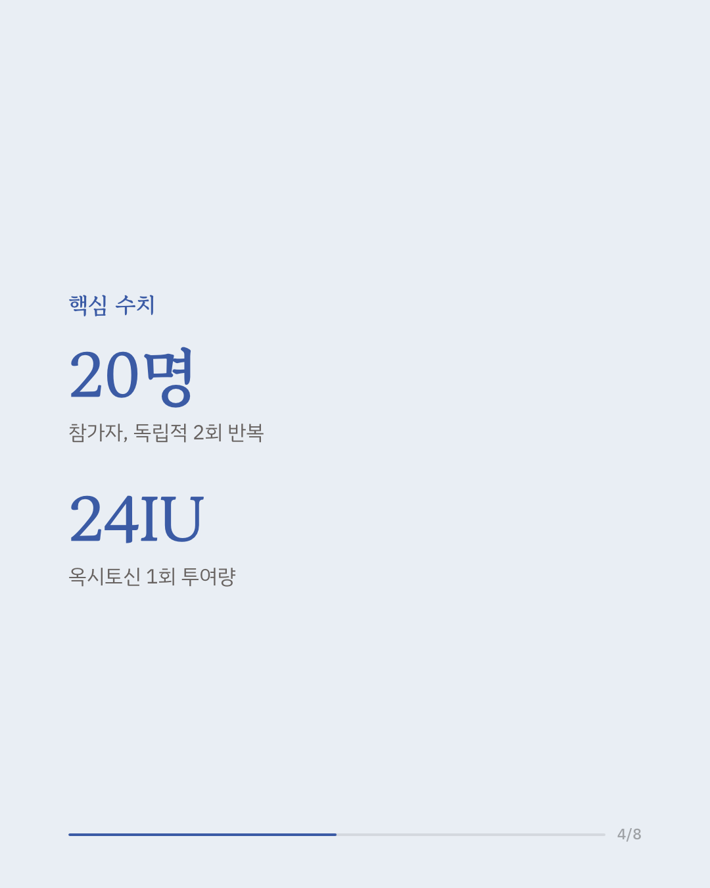
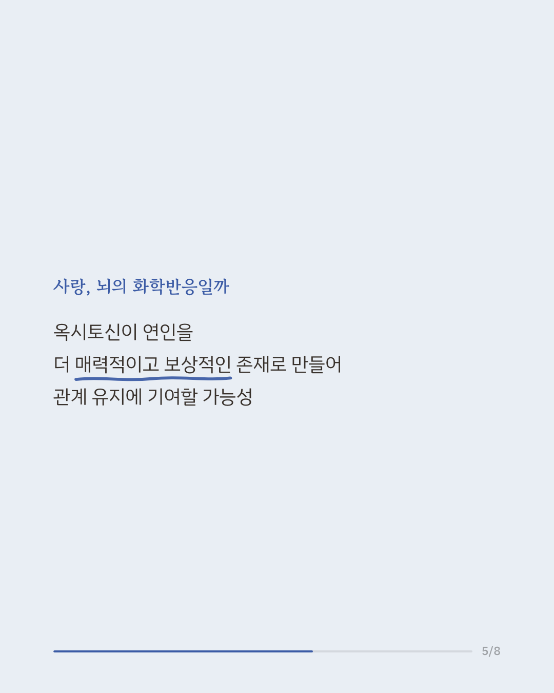
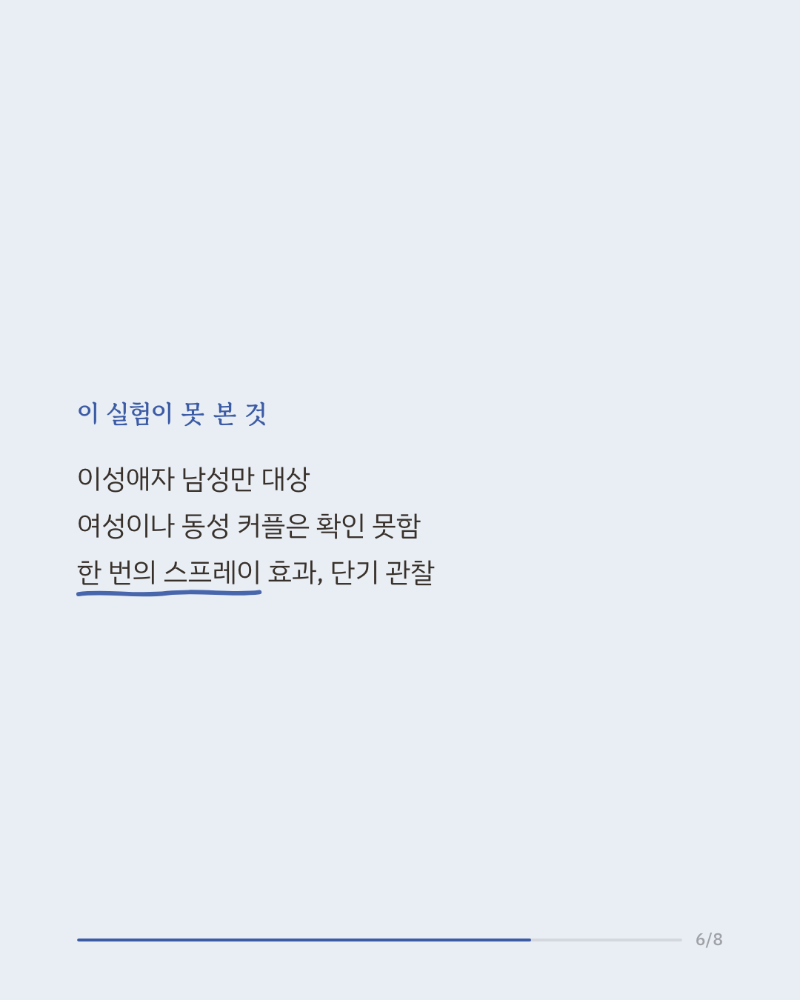
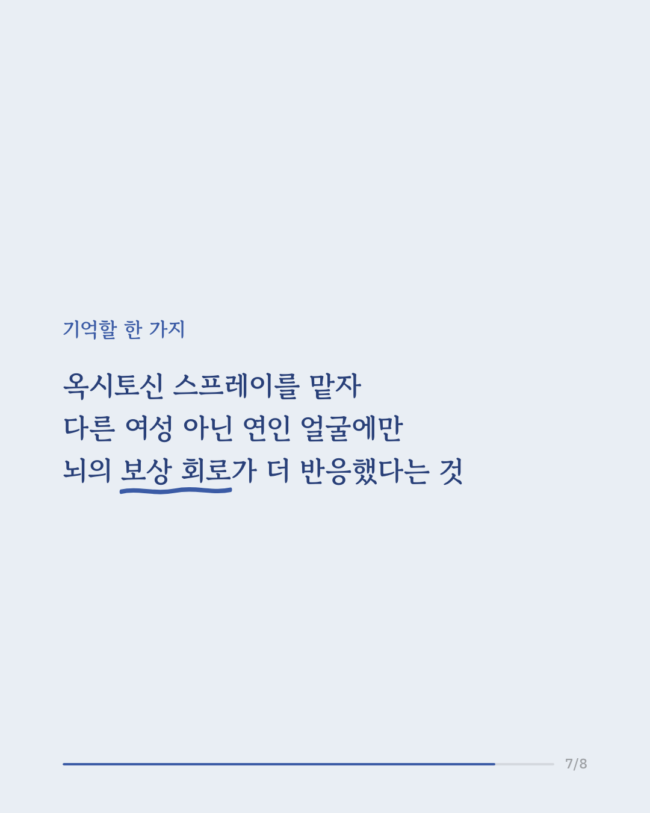
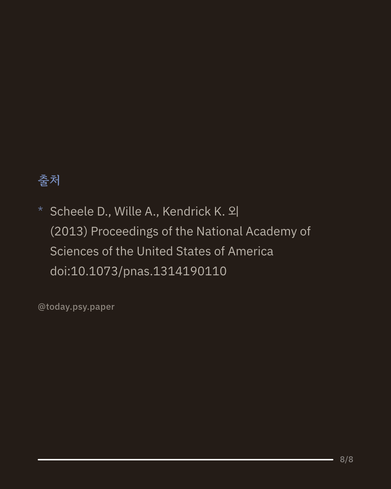

오래 지속되는 연인 관계를 유지시키는 생물학적 기전은 무엇일까요. 동물 연구에서는 신경전달물질인 옥시토신이 도파민 보상계와 함께 짝짓기 유대 형성에 관여하는 것으로 알려져 있었지만, 사람에게도 같은 원리가 적용되는지는 확인된 바 없었습니다. 연구팀은 이성애자이며 연인이 있는 남성을 대상으로 옥시토신 스프레이를 코로 흡입하게 한 뒤, 연인·낯선 여성·아는 여성의 얼굴 사진을 보여주며 뇌를 촬영했습니다. 같은 실험을 독립적으로 두 차례 반복한 결과, 옥시토신을 투여했을 때 참가자들은 오직 연인의 얼굴만 더 매력적으로 느꼈고, 낯선 여성이나 아는 여성에 대한 평가는 달라지지 않았습니다. 뇌 보상 영역인 복측 피개영역과 측좌핵의 반응도 연인의 얼굴을 볼 때 더 커졌으며, 특히 좌측 측좌핵에서는 연인이 단순히 아는 여성보다도 더 강한 반응을 이끌어냈습니다. 이는 옥시토신이 연인을 다른 사람보다 더 매력적이고 보상적인 존재로 느끼게 만들어, 장기적인 연인 관계를 유지하는 데 기여할 가능성을 보여줍니다. 다만 이번 연구는 이성애자 남성만을 대상으로 했고, 한 번의 스프레이 투여 후 단기적인 반응만을 살펴본 결과입니다. Proceedings of the National Academy of Sciences of the United States of America (2013), 'Oxytocin enhances brain reward system responses in men viewing the face of their female partner' #연애심리 #신경과학 #뇌과학 #심리학논문 #관계심리
python3 publish.py 24277856